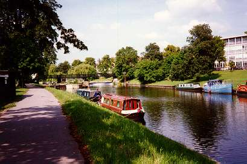
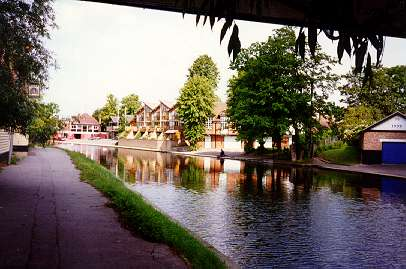
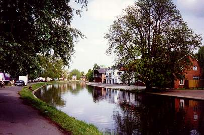
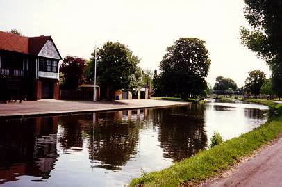
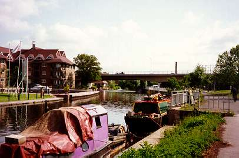
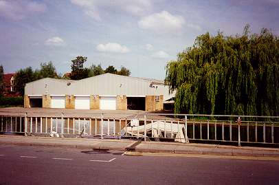

The boathouses | Chesterton »

Jesus Lock.

The boathouses of LMBC, Queens', Caius and Peterhouse are opposite Jesus Green.

Further north, opposite Midsummer Common, are the boathouses of Fitzwilliam, 1st & 3rd, St Catharine's and Goldie BC.

Further on are the boathouses of Trinity Hall and Sidney Sussex/Girton.

The first major bend is under the Elizabeth Way road bridge.

Probably the finest boathouse on the river!?
Home to Churchill, Selwyn, King's and the Leys School.
The boathouses | Chesterton »